Multi-Seeded Crackers
~ raw, vegan, gluten-free, nut-free ~
These crackers are crisp and flavorful… and a little on the “seedy side”, if you know what I mean. My inspiration for these crackers came from Mary’s Organic Crackers, which we have purchased in the past.
Whenever I post cracker recipes I get asked if a person can bake them in the oven. Usually, because they don’t own a dehydrator. Or they need/want to eat cooked foods and are looking for recipes that use clean, good quality ingredients. So I decided to split the batter in half so I could test out what it is like to bake it as well as dehydrate it.
The results are in…
Here are the results between the baked and dehydrated the version. The baked version retained more color and more flavor. I did notice that the baked crackers started to soften after being stored in an airtight container. So, I took the lid off and just let them sit on the counter for a week. They firmed back up and tasted great.
The dehydrated ones were way crisper than the baked crackers. I have to say that they were both wonderful in the taste category but the baked did have a little bit more of a… “bright” flavor. I am guessing that is because the baking process more or less roasted the seeds which deepen their flavor. So, there ya have it, in a nutshell… I mean a seed shell. :)
What I really love about this cracker though, is the coloring. The black, brown, tan, and white seeds, made for a gorgeous and dramatic looking cracker. As you can see in the photo, it presents really well and I must say that it paired perfectly with my
Raw “Brie” Cashew Cheese with Rind. This recipe does come with a oh-my-gosh-why-didn’t-you-tell-me-that-I-seeds-in-my-teeth, warning! Trust me… seriously. Either keep someone near you so you flash your spotted pearly whites to or have a mirror handy.
P.S. I have included a baking option for those of you who don’t own a dehydrator. You are still light years ahead of purchasing commercially processed cookies. So I am proud of you for being here. I do recommend in time that you invest in one as it will open up a whole new culinary world to you. :) I highly recommend the
9 tray Excalibur dehydrator.
1 (12 x 12″) tray
- 1/2 cup white sesame seeds, soaked
- 1/2 cup black sesame seeds, soaked
- 2/3 cup sunflower seeds, soaked
- 1/3 cup flax seeds
- 1/3 cup chia seeds
- 1 tsp Ceylon cinnamon
- 1/4 tsp Himalayan pink salt
- 1/4 cup raisins, finely chopped
- 1 1/2 cups water
- 2 tsp coconut aminos
Preparation:
Cracker dough:
- After soaking the seeds, drain and rinse them. If you already have seeds that are in the pantry that has been soaked and dehydrated, you can use those without re-soaking them.
- In a medium-sized mixing bowl, combine the sesame seeds, sunflower seeds, flax and chia seeds, cinnamon, and salt. Stir together, making sure the seasoning is well incorporated.
- Add the minced raisins. With clean hands, run your fingers through the mixture, breaking apart any clumps of raisins. This process will coat the raisins keeping them separate.
- Add the water and coconut aminos, mix well.
- Coconut aminos is a soy sauce substitute so feel free to use any type that you have or like; Braggs aminos, Tamari, etc.
- Set aside for 30 minutes. This will give the flax and chia seeds time to work their thickening magic.
Dehydrator, raw version:
- Spread the batter 1/4″ thick on the non-stick sheets that come with the dehydrator.
- You can use parchment paper but not wax… wax sticks.
- Score the crackers to the size and shape that you want. I like to use a long metal ruler for this.
- Dehydrate at 145 degrees (F) for 1 hour, then reduce to 115 degrees (F). After about 2 hours, flip the crackers over onto the mesh sheet and gently peel the non-stick sheet off. Continue to dehydrate for 8-10 hours or until dry.
- Tip to flip – Set the dehydrator tray in front of you. Place a mesh sheet on top of the crackers, followed by another dehydrator frame. The crackers are now sandwiched between two trays. Pinch the edges together and flip over. Remove the tray and non-stick sheet. Easy peasy.
- Store in an airtight container for 1-2 weeks. Freeze for up to 3 months.
Baked, cooked version:
- Prep the cracker batter as instructed above.
- Preheat the oven to 350 degrees (F).
- Line a cookie sheet with parchment paper.
- Spread the batter on the parchment paper to 1/4″ thick.
- If you want to make circular crackers, bake them for 45 minutes, flipping every 15 minutes.
- Slide into the oven, center rack, and bake for about 55 minutes or until done.
- Halfway through the cooking time, flip the cracker onto the baking pan, and remove the parchment paper.
- Allow the crackers to cool. Cut to the desired size. Store in an airtight container for 1-2 weeks. Freeze for up to 3 months.
Culinary Explanations:
- Why do I start the dehydrator at 145 degrees (F)? Click (here) to learn the reason behind this.
- When working with fresh ingredients it is important to taste test as you build a recipe. Learn why (here).
- Don’t own a dehydrator? Learn how to use your oven (here). I do however truly believe that it is a worthwhile investment. Click (here) to learn what I use.
Let the fun begin!
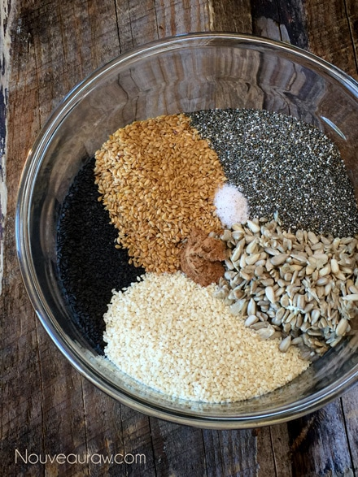
Hand-mix together so the raisins get a good powder-coating.
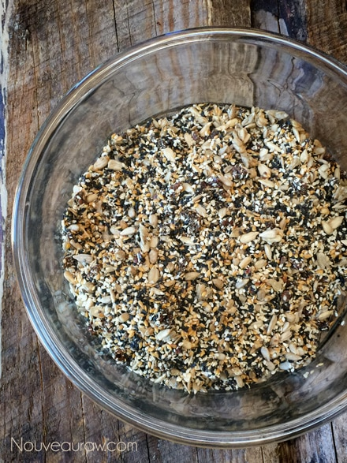
Add the water and coconut aminos.
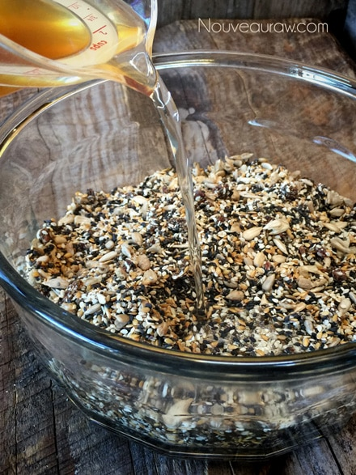
Here is the batter, hanging out, waiting on the flax & chia seeds to thicken.
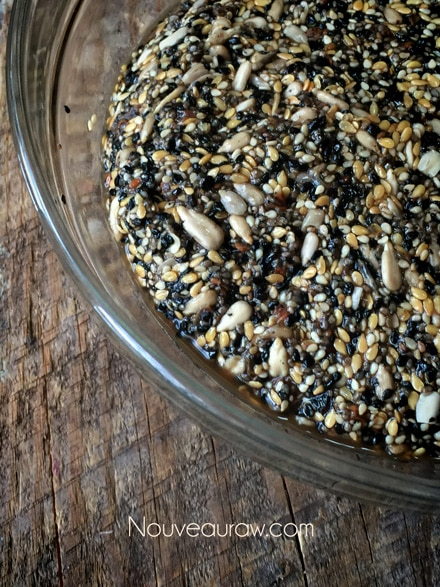
Preparing the batter for baking.
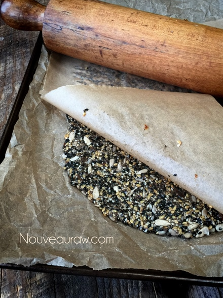
Slide into the oven for about 55 minutes.
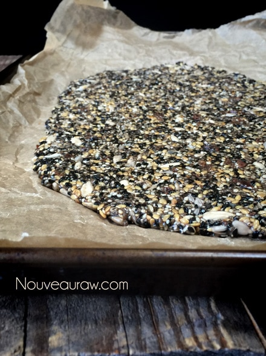
Cut into desired shapes and sizes.
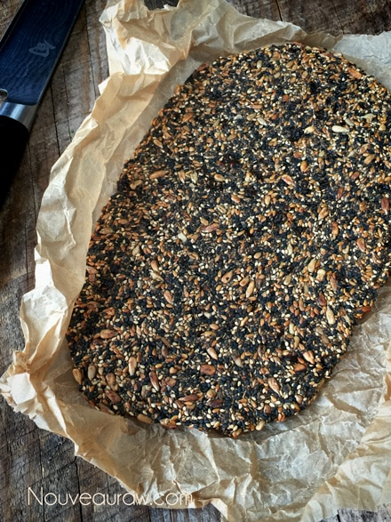
These crackers are heading to the dehydrator.
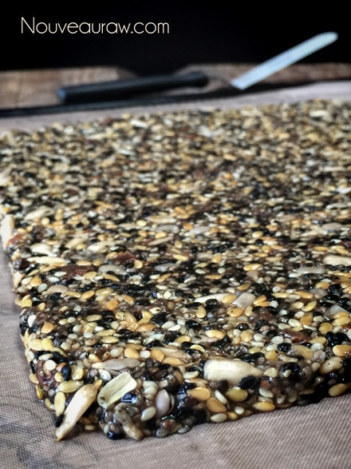
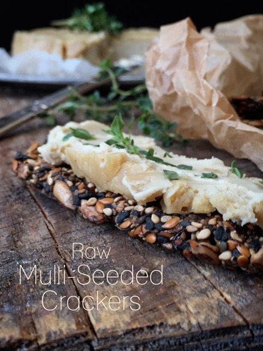
Bob required more crackers. This time I made them into circles.
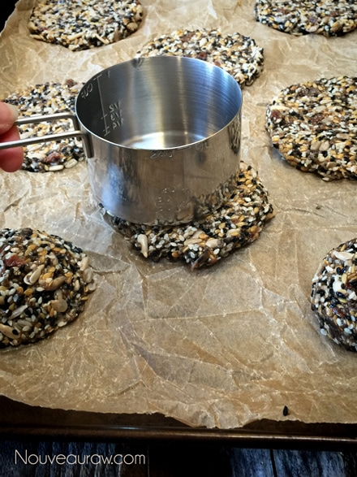
I flattened the crackers with a metal measuring cup.
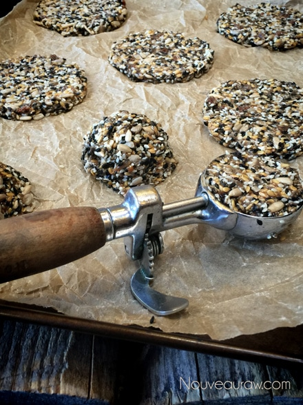
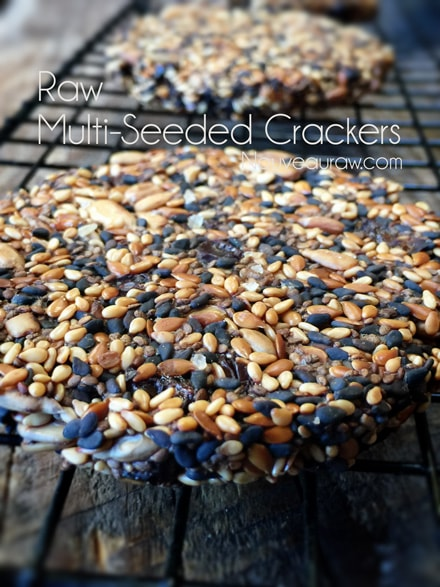
© AmieSue.com